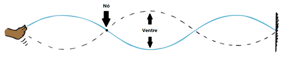
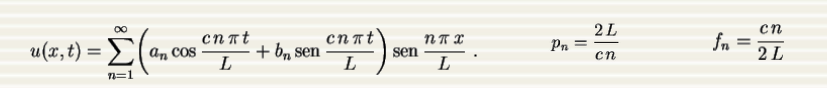

Parte 2: O que é música?
Pode-se resumir música como uma sucessão de ondas sonoras sendo emitidas. Porém, nem toda onda sonora pode ser classificada como música, pois, diferentemente do ruído, a música é definida como um padrão sonoro reconhecível e organizado.
Ondas Estacionárias
Nem toda onda sonora pode ser classificada como música, pois as ondas transmitidas por instrumentos musicais são chamadas de ondas estacionárias.
Essas ondas sãõ formadas quando duas ondas, propagando-se em direções opostas, encontram-se. Esse processo é causado pela ressonância e, com isso, produz-se notas musicais, que são chamados de harmônicos. Essas ondas, como qualquer outra, possuem: amplitude (A), comprimento de onda (λ), frequência (f) e velocidade (v). Além de possuírem os nós, nos quais ocorrem interferência destrutiva, e os ventres, nos quais ocorre interferência construtiva.

Instrumentos Musicais
As ondas estacionárias são produzidas pela forma como os instrumentos musicais propagam o som. Existem 3 tipos de instrumentos musicais.
Instrumentos de Corda: Onde o a própria corda gera a onda estacionária.
Instrumentos de Sopro: Onde o as ondas são formadas no tubo.
Instrumentos de Percurssão: Onde o as ondas são formadas na caixa do instrumento.
Notas Musicais
As notas musicais são formadas pelas ondas estacionárias segundo a série de Fourier abaixo.

Essas ondas apresentam a frequência (fn) como sendo um conjunto de frequências, onde a mais baixa é chamada de frequência fundamental. Ou seja, quando fazemos vibrar uma corda, o que ouvimos não é um som puro, mas sim a superposição de vários sons, cujas freqüências são todas elas múltiplas da freqüência fundamental. Essa frequência fundamental é o que dá nome a nota musical.
As vibrações de frequências mais altas são chamadas de harmônicos ou sobretons. Através desses harmônicos é que é possível diferenciar um instrumento musical de outro (timbre), pois dependendo de quais harmônicos serão tocados o som será diferente.